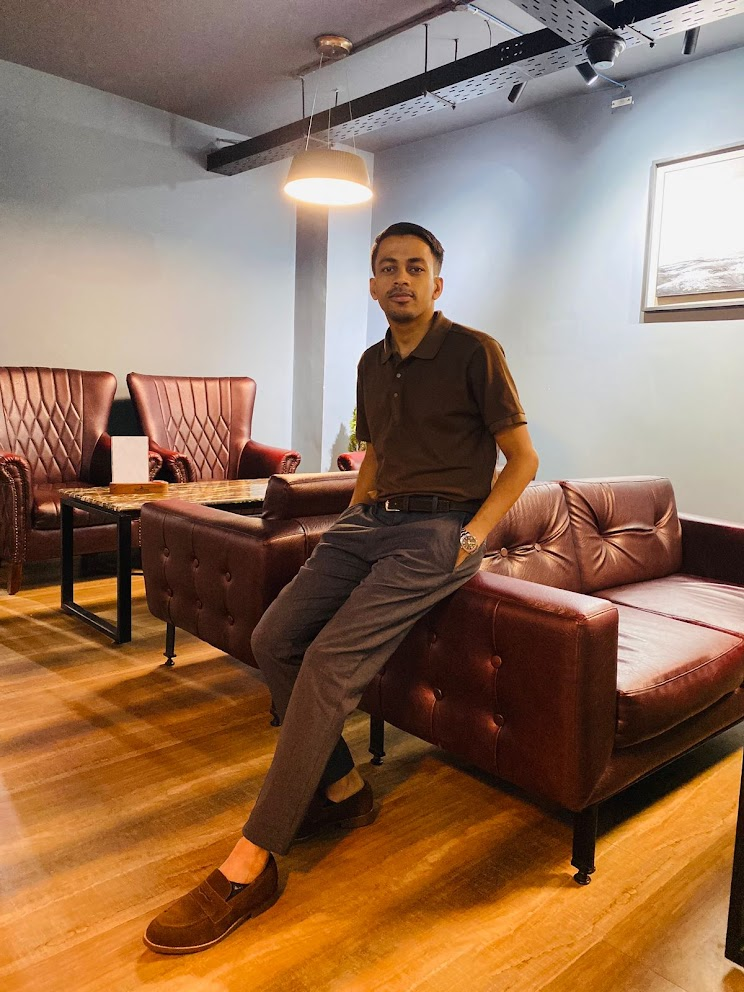

About
Md. Miraz Hossain
Dhaka-based journalist and researcher. My work sits at the intersection of journalism, social science, and technology — with a focus on how algorithmic media systems shape truth and public knowledge in South Asia.
Curriculum Vitae
One-page CV — print-ready PDF
Last updated April 2026. Includes publications, coursework, references, and selected investigations.
I'm a final-year undergraduate at the University of Liberal Arts Bangladesh, studying Media Studies and Journalism, and I hold a BA in English from the University of Dhaka. I'm currently applying to MSc programmes in 2028 — Oxford's OII, LSE Media and Communications, and the Ed.M at Harvard HGSE.
I spent three years as a staff feature writer at The Business Standard, covering governance, digital rights, and freedom of expression, before joining Netra News (Stockholm) as a staff correspondent for political corruption and military accountability investigations. I now lead investigations at ForensIQ at ULAB, teach Academic English at ULAB's Centre for Language Studies, and run Tools for Journalists — an open platform addressing digital-literacy gaps in South Asian newsrooms.
My research asks how algorithmic systems mediate public knowledge — and what that means for epistemic equity in societies where platform adoption is rapid but policy debate lags behind. My ongoing mixed-methods study in Dhaka uses a validated survey and qualitative interviews to measure how algorithmically curated social media shapes misinformation susceptibility among young urban news consumers.
Outside the work: I read literature and narrative theory, study Spanish, take photographs when I travel, and run a small community English-learning initiative in Lakshmipur.

Professional experience
-
2022 – present
The Business Standard, Dhaka
Staff Feature Writer · 200+ features, TBS Best Profiles 2022
-
2024 – 2025
Netra News · Sweden
Staff Correspondent · OSINT investigations, political corruption & military accountability
-
2025 – present
ForensIQ · ULAB
Head of Investigations · trained 300+ journalists in OSINT & verification
-
2025 – present
ULAB · Centre for Language Studies
Instructor, Academic English · two undergraduate batches
-
2017 – present
Independent
Freelance translator (World Bank registered vendor) & education consultant
References
Academic
Dr. Sarkar Barbaq Quarmal, PhD
Associate Professor & Graduate Program Coordinator, Dept. of Media Studies & Journalism, ULAB
sarkar.barbaq@ulab.edu.bd
Editorial
Nazmul Ahasan
Executive Editor, Netra News
nazmul@netra.news
Let's talk
I'm always open to research collaborations, reporting tips, and speaking invitations.
email → download cv ↓